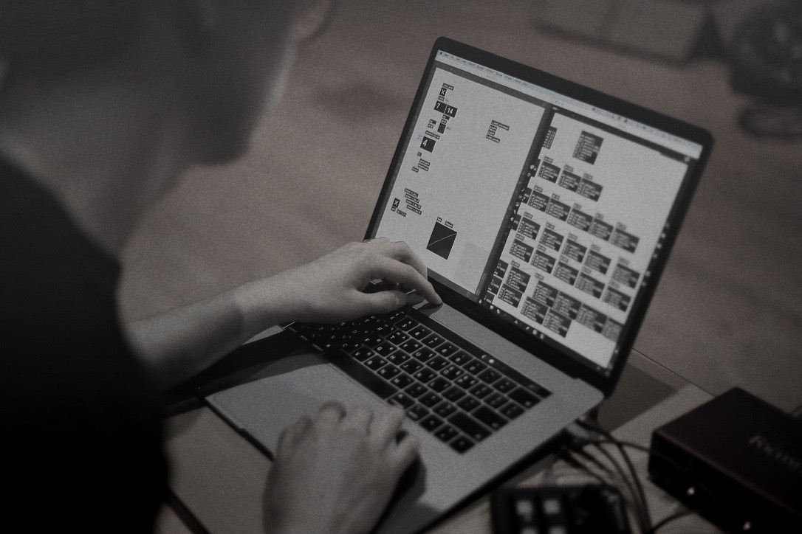

선 線, line


The Boundary Between Sound and Silence
"선 (Line)" explores the boundaries created by lines—connecting yet separating spaces, sounds, and moments. Utilizing 4-channel tape music and live electronics, the piece investigates the acoustic properties of lines and how they manifest in physical space.
The work begins with a single, thin frequency that gradually expands, weaving complex textures through the quadraphonic sound system. The performer interacts with these invisible lines of sound, manipulating their tension and release in real-time.
Through the interplay of static noise and fluid tones, "Line" questions the definition of boundaries: Is a line a division, or is it a point of contact? The immersive soundscape invites the audience to perceive the movement of sound as a physical drawing in the air.
Credits
- Composition & Performance: Kim Eunjun
- System: Max8
- Performances:
- 2021 Ulsan Contemporary Art Festival 'Vibrating Boundaries' (4ch Tape)
- 2021 KNUA 'MTK041' (Live Electronics)